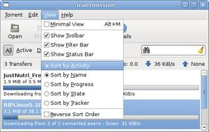
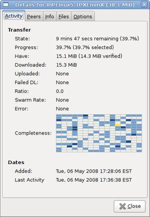

Welcome to Transmission!
Transmission is a BitTorrent client. It is used for peer to peer filesharing over the internet. BitTorrent is a fast way of transferring files, because everyone who downloads must also upload to others. This means speeds are only limited by the number of people connected to a given torrent - the more people the better!
How do I use it? |
|
 |
Download your file's associated 'torrent file' (extension .torrent). These are commonly found at 'tracker' websites. Once you have the torrent file, click Open and select it, or simply drag it into Transmission - downloading should start immediately. You can pause and resume transfers at any time, so long as the files remain in your download folder. It is good etiquette to share or 'seed' the file for a while (ie leave it uploading) once your download is complete. You can use Transmission's Details window to adjust download/upload preferences on the fly. |
Can I create my own torrents? |
|
 |
Yes, choose 'Create New Torrent' from the Torrent menu. When the dialogue box appears, choose your file/folder and enter your tracker address, comments and private status. Once you are done, click 'New'. Transmission will automatically optimize the torrent file for what you are sharing. |
How can I organize my torrents? |
|
|  |
Transmission allows you to sort your torrents by various criteria. Simply choose a Sort criterion in the View menu. You can also filter your torrents by their activity state. Simply enable the Filter bar in the View menu. |
Where can I find more detailed information on my torrents? |
|
|  |
Click the Details icon in the toolbar, or simply double-click any transfer in the main window. The Details window gives you:
|
Can I choose to download specific files? |
|
 |
Yes, double click the multi-file transfer to open the Details window, and then click the 'Files' tab. Simply check the boxes next to the files you want to download (the default is all of them). You can even set a priority (High, Normal, Low) to each file, if you want some to finish faster than others. To do so, right-click on the priority column. |